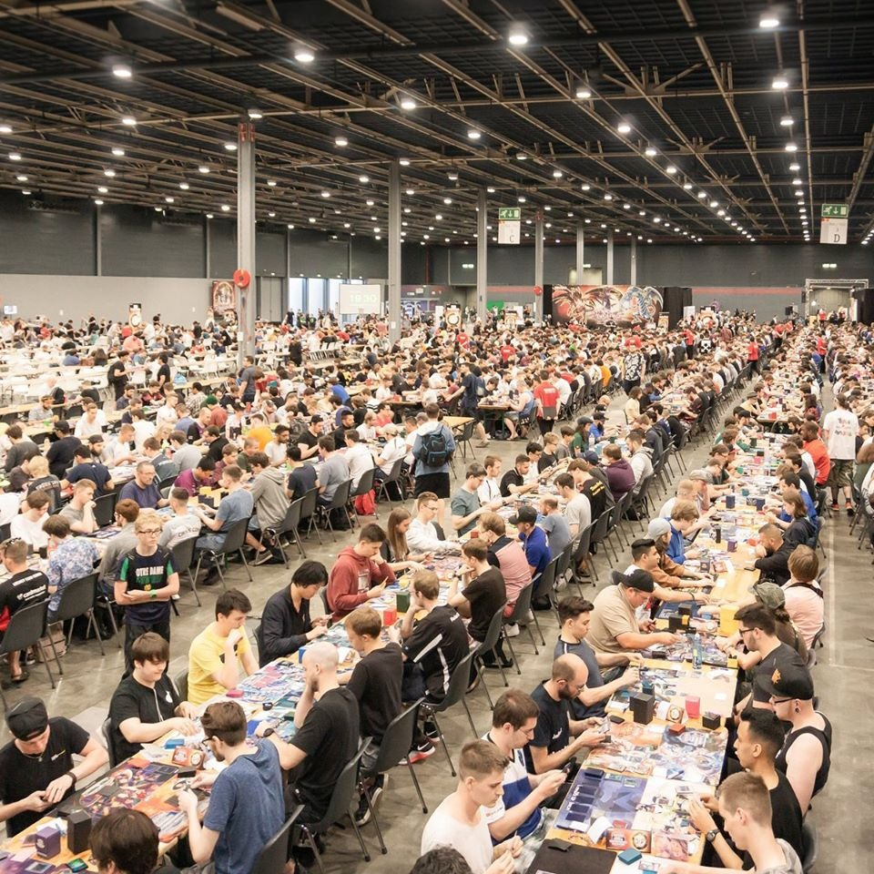
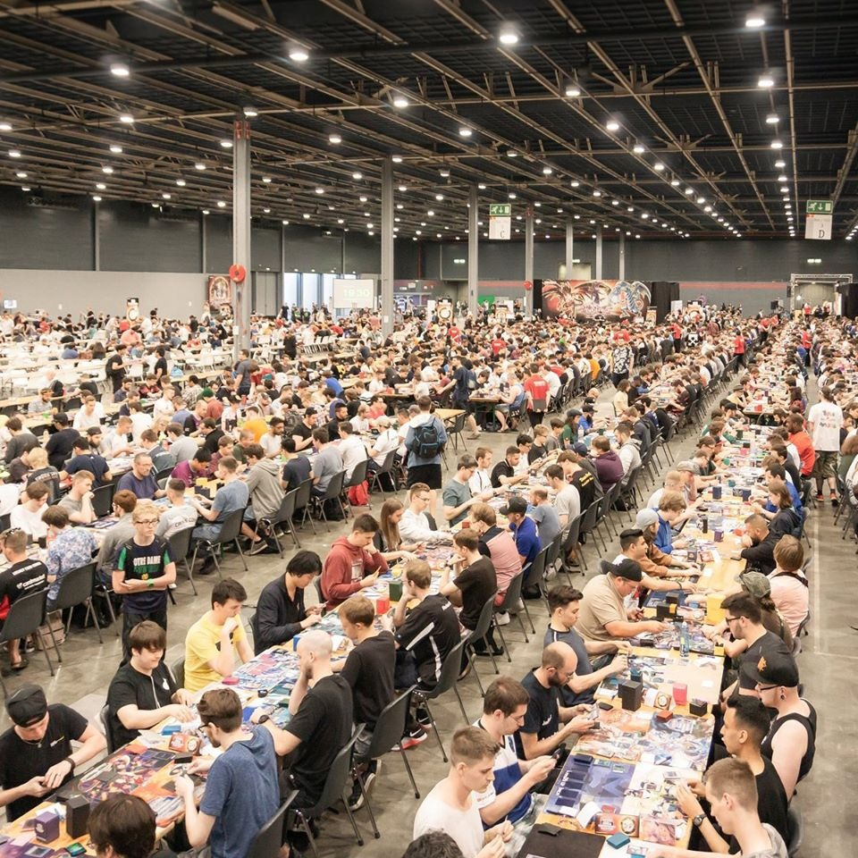

Things I Love
Movies & Series
The best kind of StoryTelling
Current Favourites:
Movie: Passengers
Serie: Breaking Bad
Animated Serie: Avatar, The Last Airbender

Anime
Stronger Emotions = Stronger Feelings &
Fiction is easier to animate compared to acting.
Current Favourite: Made in Abyss
Music
Movie Scores:
Hans Zimmer
Trailer Music/
(AKA Modern Classical):
Two Steps From Hell
Pure epicness!
Game Soundtracks
Relaxing
Reading
Especially Fantasy
Absolute Favourite:
The Name of the Wind


Trading Card Game: Yu-Gi-Oh!


 

Other Tabletop/Board-Games


PC/Video-Games


Sport: Bujinkan
The Way of the Ninja


Why I Love Design
My personality is something I'm very proud of. I've managed to keep my best child traits:
To this day I'm still playful and curious. I'm also brutefully honest (non-dutch people don't always like this).
I'm always hungry for more knowledge. And I like to solve problems. I like entertainment A LOT;
I'm completely addicted to watching, reading, playing and procrastinating on the internet.
I like creative challenges that invole taking risks and choosing your strategy.
Being creative to solve problems is what I enjoy, so Design fits me perfectly.
Also, I love details.